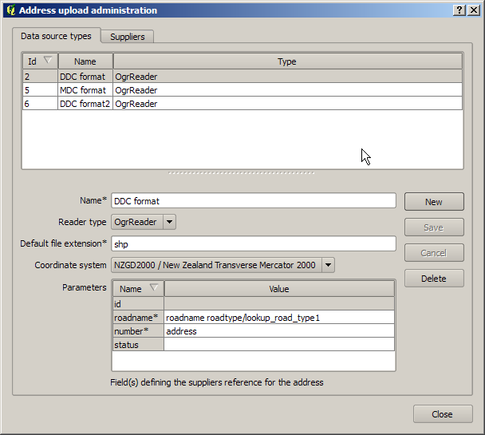
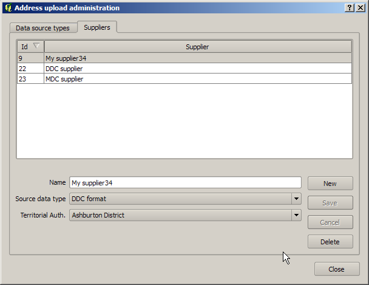

See the overview for a high level description of address uploads
The system administration dialog is used to manage the suppliers and formats in which address data are supplied.
This screen has two tabs - the source type tab used to administer the formats of data supplied, and the supplier tab used to administer suppliers.
The data sources screen is used to define formats in which data is supplied. The existing formats can be modifed, and new formats created. Note: if a job is reloaded after modifying the source type or supplier it uses then the update source type will be used.
Select the "New" button to create a new data source, "Save" to save changes made, "Cancel" to undo any changes made, and "Delete" to delete a data source.
Each data source has the following attributes:

The suppliers tab is used to administer data suppliers. Note that if an authority supplies data in more than one format then each format will require a separate entry in this table.
Select the "New" button to create a new supplier, "Save" to save changes made, "Cancel" to undo any changes made, and "Delete" to delete a supplier.Each data source has the following attributes: